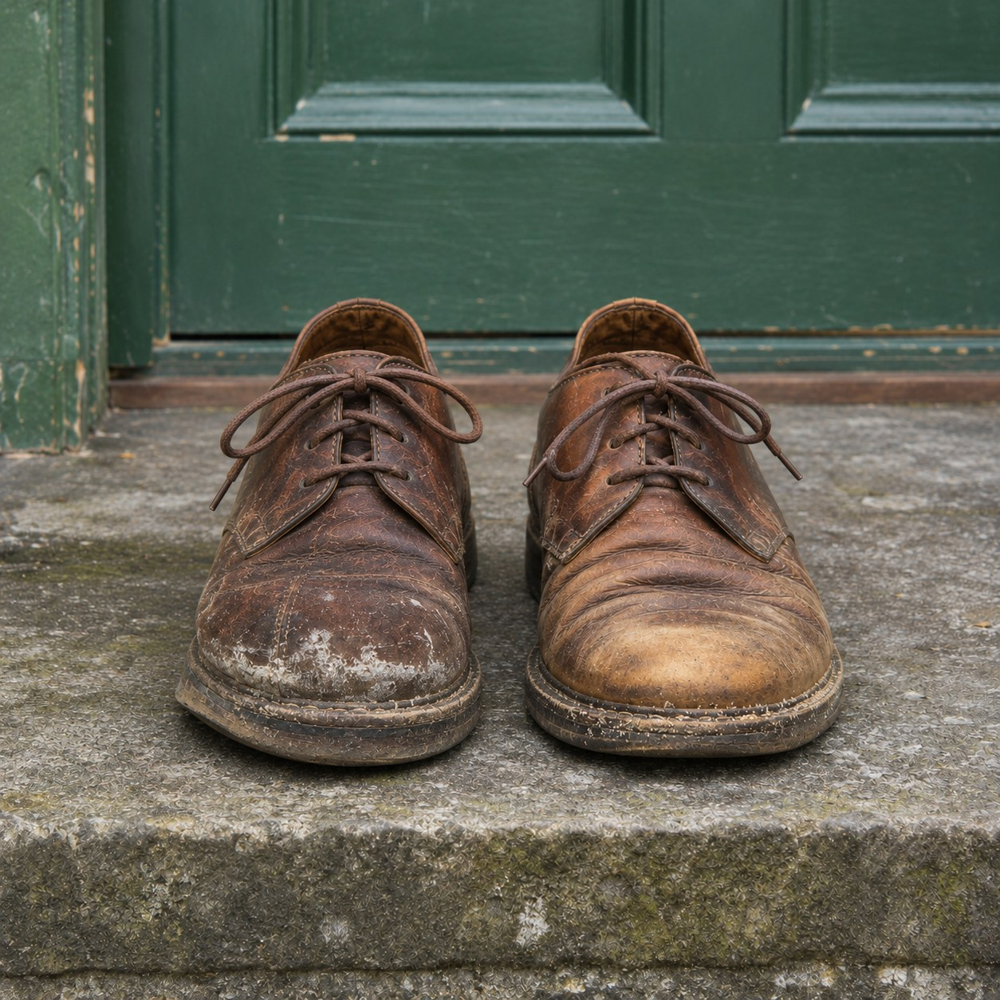
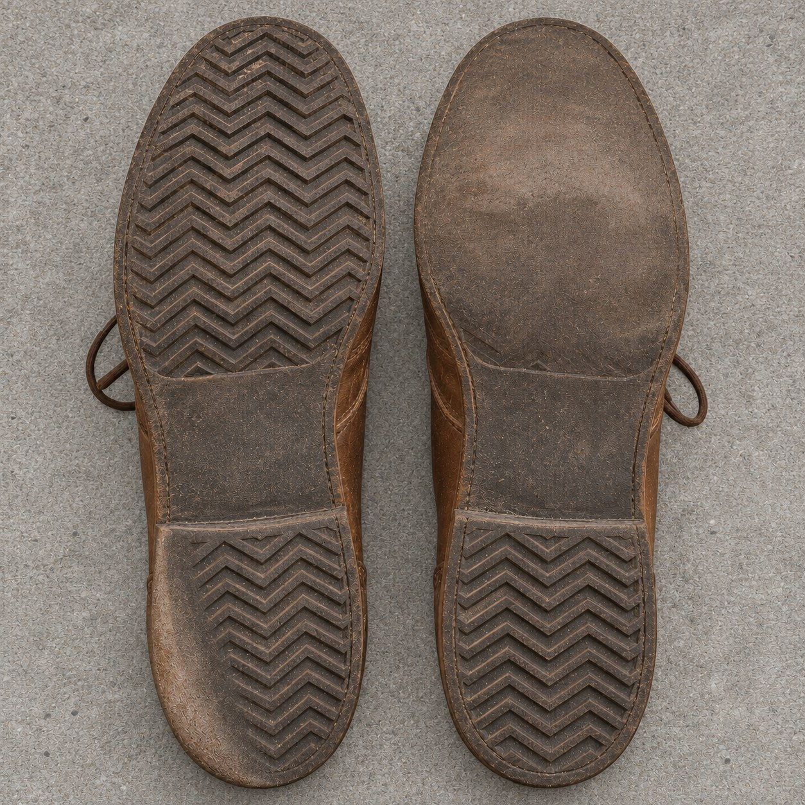

Still a Pair


A pair of shoes is one thing in two pieces. They are bought together and boxed together, and in the box they lie toe to heel like two halves of one thought. Nobody buys a single shoe.
These two were parted on the first day. One person took the left shoe and wore it for a year, with an odd shoe of their own on the other foot. Someone else, in another city, took the right. The two never met. Each shoe learned one walk, one weight, one way of standing at a bus stop.
Now they sit side by side again, and they no longer match. The left is worn down at the outer heel and ringed with pale marks of road salt. The right is creased deep across the toes and has faded in the sun. Put them on and you would lean two ways at once.
Tehching Hsieh and Linda Montano spent a year tied together at the waist by a rope, and agreed never to touch. They were bound and kept apart at the same time. These shoes had it the other way round. Nothing tied them, and they were a pair the whole year, through every hour of two lives that never crossed.
In Plato's Symposium, Aristophanes tells how people were once double, until Zeus cut them in half, and how each half has been looking for the other ever since. In his story, when the halves find each other, they fit.
But a year apart changes the shape of a thing. What makes these two a pair now is not that they fit. It is that they were made to, and each of them spent a year being half of something that was somewhere else.